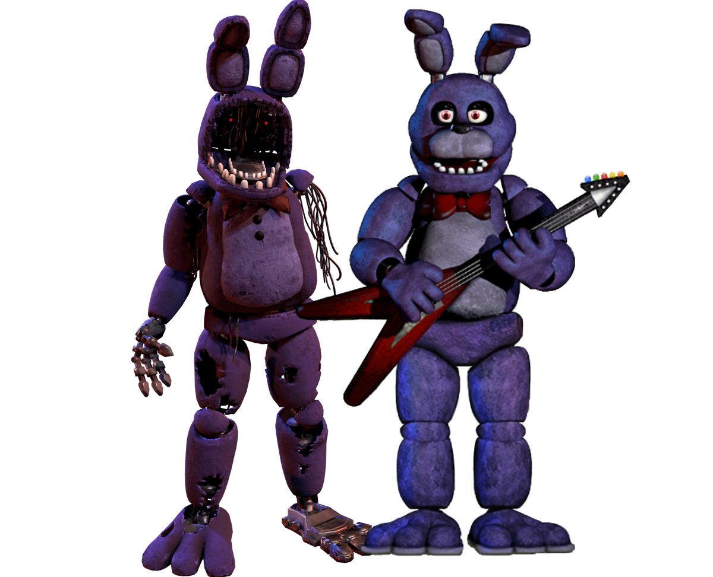

Bonnie, le lapin animatronique, est l'un des personnages les plus complexes de la série. Malgré le fait qu’il semble plus calme que Freddy ou Chica, l’âme qui réside en lui est tout aussi perturbée.
Effectivement Bonnie possède une âme d’enfant nommé Jeremy. Il est l’âme la plus violente et la plus courageuse en comparaison avec les autres. La nature violente de Bonnie serait reliée à la mort de Jeremy, sa mort selon les théories serait dû au fait qu’il aurait essayé de se battre contre son agresseur, William Afton, faisant de lui la première ou la deuxième victime de ce massacre.
L’animatronique possède un regard vide et une démarche rigide pouvant laisser comprendre que l’âme à l’intérieur cherche la vengeance et n’hésitera pas à tuer les innocents jusqu’à trouver son assassin.
Toy Bonnie est l’un des animatroniques de la générations des Toys.
Il apparaît pour la première fois dans FNAF 2. Il a été créé avec une fonctionnalité permettant de protéger les clients et employés. Cependant, la nuit, comme ses pairs, il devient dangereux...
Il ne possède aussi aucune histoire d'âme, le possédant mais il n’y a qu'une raison pour expliquer son comportement la nuit. Dans le lore du jeu, quelqu’un s’est introduit dans la pizzeria pour trafiquer le système de reconnaissance faciale des Toys, ce qui a engendré leur destruction plus tard.

SpringTrap, est l’animatronique responsable de la mort de William Afton (SpringBonnie). Il est devenu comme ça suite à la mort de ce dernier et à son abandon, ce qui a fait que le costume-animatronique a moisi avec le corps de William Afton à l’intérieur.
Springtrap deviendra l’animatronique phare de l’attraction Fazbear’s Fright qui a été créée en hommage aux incidents qui ont maudit la réputation du Freddy Fazbear's Pizza.
Malgré la tentative de destruction dans le restaurant de Pizzeria Simulator, William Afton sera revu de nouveau environ 6 ans plus tard dans le sous Pizzaplex de Security Breach.
À la fin, Glamrock Freddy met le feu au Pizzaplex. Nous ne savons pas ce qu’il advient de Burntrap, mais il est fort probable qu’on le retrouve dans un futur opus.
Nightmare Bonnie est une version cauchemardesque de Bonnie et il fait sa première apparition dans FNAF 4.
Son apparence est plutôt effrayante notamment à cause de son costume excessivement abîmé, des griffes et des dents acérées et légèrement ensanglantées. Il possède une corpulence un peu plus imposante que Bonnie.
Il fonctionne en parallèle de Nightmare Chica en approchant du côté gauche de la chambre (sur les portes).


Plushtrap est un personnage célèbre du jeu Five Nights at Freddy's 4. Cependant, ne vous laissez pas tromper par son apparence en peluche. Plushtrap se manifeste comme un chasseur impitoyable dans un jeu où la furtivité est essentielle, visant à vous tuer sans laisser de signes audibles.
Jack-O-Bonnie est l'une des versions spéciales d'animatroniques de l'événement d'Halloween dans Five Nights at Freddy's 4.
Il est une version enflammée et lumineuse de Bonnie, avec des flammes qui sortent de son corps et un visage sinistre. Son apparence représente la chaleur et la brûlure, contrastant fortement avec le froid et l'obscurité habituels des autres animatroniques.


Rockstar Bonnie, une autre version des animatroniques de Pizzeria Simulator, est une réinterprétation de Bonnie avec un style plus vibrant et flashy.
Il a une personnalité un peu plus décontractée et une attitude un peu plus enjouée comparée à d'autres versions de Bonnie. Cependant, il ne faut pas sous-estimer ce personnage, car comme tous les animatroniques Rockstar, il peut devenir menaçant si les règles ne sont pas respectées.
Shadow Bonnie est une version effrayante de l'animatronique Bonnie dans Five Nights at Freddy's.
Il apparaît pour la première fois dans FNAF 2 et il possède une apparence identique à Shadow Freddy, mais il est de couleur noire se rapprochant plus d'une ombre effrayante. Contrairement à Bonnie, Shadow Bonnie ne produit aucun son, ce qui le rend encore plus dérangeant.


Chocolate Bonnie est une version de Bonnie apparue dans un événement spécial pour Pâques dans Five Nights at Freddy's: Special Delivery. Ce Bonnie a une apparence sucrée, faite pour ressembler à un bonbon au chocolat, avec une texture qui évoque un chocolat fondant. Il porte un petit nœud papillon et des oreilles en forme de lapin, rendant son design plus mignon. Cependant, comme tous les animatroniques, il cache une menace. Chocolate Bonnie est un exemple de l'approche unique de FNAF, où les personnages sucrés et festifs sont également capables d’effrayer les joueurs. Cette version du personnage n’est pas canon au lore.
System Error Toy Bonnie est une version corrompue et défectueuse de Toy Bonnie dans Five Nights at Freddy's: Special Delivery. Cette version est le résultat d’un "erreur système", ce qui rend Toy Bonnie plus instable et glitché.
Il a un aspect cybernétique déformé, avec des parties de son corps qui semblent déconstruits et des éclats de lumière artificielle qui en jaillissent. Cette version du personnage représente un des thèmes récurrents de la série : la corruption des systèmes et des animatroniques, mettant en lumière le côté effrayant de la technologie défectueuse. Cependant cette version du personnage n’est pas canon au lore.


Glamrock Bonnie était une animatronique Glamrock se trouvant dans le Pizzaplex avant Montgomery Gator. On ne le voit jamais dans le jeu de base mais il est mentionné plusieurs fois notamment par Freddy et par certains messages.
Il est le mascotte du Bonnie Bowl qui restera ouvert même après sa disparition. Dans l’attraction du Monty Golf, Bonnie y est présenté comme faisant partie du groupe Glamrock avant de prendre sa retraite et de céder son poste à Monty en lui donnant sa guitare.
Ce petit passage du jeu montre comment Monty est arrivé dans le groupe des Glamrock. Cependant beaucoup pensent que cette histoire serait fausse car Bonnie sera retrouvé par Cassie dans le DLC du jeu à l’arrière du Bonnie Bowl totalement détruit.
En regardant attentivement, on peut voir un trou au niveau du torse avec des restes de griffes qui visent directement Monty, car il était un grand fan de Glamrock Bonnie et il rêvait de pouvoir performer à ses côtés.
Spring Bonnie est le deuxième animatronique créé par Henry Emily pour le Fredbear’s Family Dinner. Il est considéré comme l’ancêtre de Bonnie.
Quelques années après la fermeture de la pizzeria, William Afton prendra le costume-animatronique qui est équipé d’un système de spring-lock qui sont des ressorts pour ouvrir l’endosquelette et pouvoir placer facilement un humain. Il l’utilisera pour obtenir la confiance d’enfants et perpétuera ensuite ses plans macabres.
Malheureusement, il sera plus tard la seule et unique tombe de William Afton car à cause d’une simple goutte d’eau le mécanisme s’est refermé sur le corps de William, le broyant vivant à l’intérieur et lui causant une mort lente et douloureuse.


Ignited Bonnie est un animatronique en ruine et partiellement consumé par le feu, comme ses homologues dans The Joy of Creation. Il est marqué par une apparence brisée, avec des parties de son corps brûlées.
Son regard froid et son corps endommagé donnent une atmosphère sinistre et violente à ce personnage. Comme pour les autres animatroniques ignited, Ignited Bonnie représente l'idée de la dégradation et de l'horreur après la catastrophe, tout en poursuivant sa mission menaçante envers les survivants.